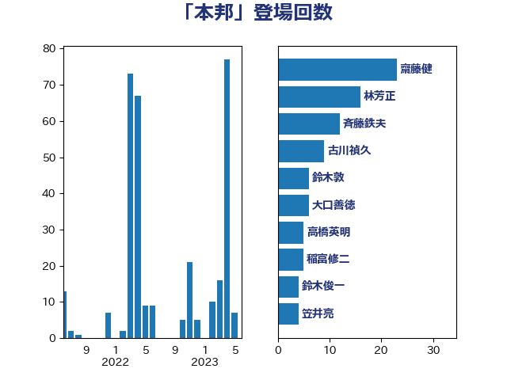

単語「本邦」

| 齋藤健 | 自由民主党 | 23 回 |
| 林芳正 | 自由民主党 | 16 回 |
| 斉藤鉄夫 | 公明党 | 12 回 |
| 古川禎久 | 自由民主党 | 9 回 |
| 鈴木敦 | 国民民主党 | 6 回 |
| 大口善徳 | 公明党 | 6 回 |
| 高橋英明 | 日本維新の会 | 5 回 |
| 稲富修二 | 立憲民主党 | 5 回 |
| 鈴木俊一 | 自由民主党 | 4 回 |
| 笠井亮 | 日本共産党 | 4 回 |
| 穀田恵二 | 日本共産党 | 4 回 |
| 高橋光男 | 公明党 | 3 回 |
| 赤羽一嘉 | 公明党 | 3 回 |
| 岸田文雄 | 自由民主党 | 3 回 |
| 鈴木貴子 | 自由民主党 | 2 回 |
| 葉梨康弘 | 自由民主党 | 2 回 |
| 萩生田光一 | 自由民主党 | 2 回 |
| 河野義博 | 公明党 | 2 回 |
| 岩田和親 | 自由民主党 | 2 回 |
| 中山展宏 | 自由民主党 | 2 回 |
| 高良鉄美 | 無所属 | 1 回 |
| 音喜多駿 | 日本維新の会 | 1 回 |
| 谷田川元 | 立憲民主党 | 1 回 |
| 西村康稔 | 自由民主党 | 1 回 |
| 磯崎仁彦 | 自由民主党 | 1 回 |
| 石橋通宏 | 立憲民主党 | 1 回 |
| 石井章 | 日本維新の会 | 1 回 |
| 石井拓 | 自由民主党 | 1 回 |
| 牧山ひろえ | 立憲民主党 | 1 回 |
| 渡辺猛之 | 自由民主党 | 1 回 |
| 浅田均 | 日本維新の会 | 1 回 |
| 津島淳 | 自由民主党 | 1 回 |
| 森山浩行 | 立憲民主党 | 1 回 |
| 梅村みずほ | 日本維新の会 | 1 回 |
| 松野博一 | 自由民主党 | 1 回 |
| 松原仁 | 立憲民主党 | 1 回 |
| 木原誠二 | 自由民主党 | 1 回 |
| 星北斗 | 自由民主党 | 1 回 |
| 川田龍平 | 立憲民主党 | 1 回 |
| 岩渕友 | 日本共産党 | 1 回 |
| 宮路拓馬 | 自由民主党 | 1 回 |
| 安江伸夫 | 公明党 | 1 回 |
| 古屋範子 | 公明党 | 1 回 |
| 勝部賢志 | 立憲民主党 | 1 回 |
| 丸川珠代 | 自由民主党 | 1 回 |
| 中川正春 | 立憲民主党 | 1 回 |